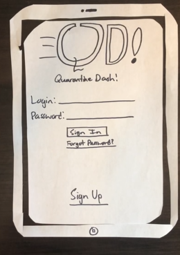

Problem Statement: Quarantine Dash!
Our users are frustrated that while they are in quarantine they do not get a chance to choose what food they eat. They receive premade boxed meals delivered to their doors for each meal. Our solution should provide these students with the ability to choose and order food through the university meal plan and have it delivered to their door.
Affinity Diagram: Quarantine Dash!

My group and I worked together to brainstorm everything COVID-19 food delivery related.
Persona: 4 Personas for "Quarantine Dash!" App

Four personas for typical food delivery service users.
Storyboard: 4 Storyboards for "Quarantine Dash!" App
Four storyboards for problems certain food delivery service users can run into, and how "Quarantine Dash!" fixes them.
Sketches
Rough ideas of how our "Quarantine Dash!" application might work.
Paper Prototype
Shows a walkthrough of the "Quarantine Dash!" app on paper to give a feel as to how the app might look screen by screen.